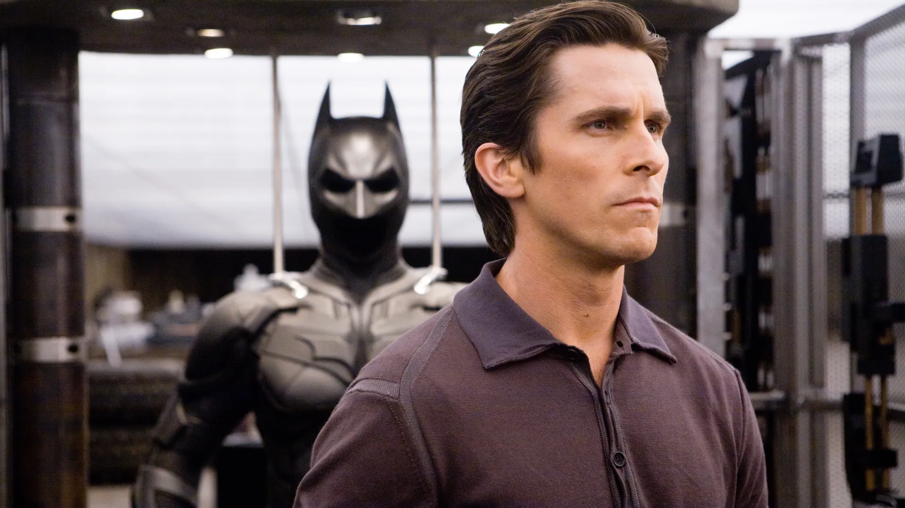
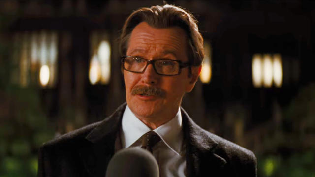

Eight years after the events of The Dark Knight (2008) find Gotham at a time of peace. This is due to Batman taking the fall for Harvey Dent's murder. However, a new evil force named Bane has arrived in Gotham and aims to take over the city and expose the truth behind who Harvey Dent really was. Now that Wayne Manor has been completely rebuilt, Bruce Wayne has become almost reclusive, rarely leaving the estate. And with Bane taking over the city by force, it forces Batman to come out of retirement. But his allies are few and far between. An elusive jewel thief by the name of Selina Kyle could be the key to stopping Bane, but whose side is she on?
Watch The Movie Here!!!
Starring :
Tom Hardy as Bane
Edward Thomas Hardy CBE (born 15 September 1977) is an English actor, producer, and
screenwriter. After studying acting at the Drama Centre London, he made his film debut in Ridley Scott's Black Hawk
Down (2001). He had supporting roles in Star Trek: Nemesis (2002) and RocknRolla (2008), and went on to star in
Bronson (2008), Warrior (2011), Tinker Tailor Soldier Spy (2011), Lawless (2012), This Means War (2012), and Locke
(2013). In 2015, he starred as "Mad" Max Rockatansky in Mad Max: Fury Road and both Kray twins in Legend, and was
nominated for the Academy Award for Best Supporting Actor for his role in The Revenant. He has appeared in three
Christopher Nolan films: Inception (2010), The Dark Knight Rises (2012) as Bane, and Dunkirk (2017). He has since
starred as Eddie Brock/Venom in the film Venom and its 2021 sequel Venom: Let There Be Carnage. He also portrayed Al
Capone in the film Capone (2020).
Hardy's television roles include the HBO war drama mini-series Band of Brothers (2001), the BBC historical drama
mini-series The Virgin Queen (2005), Bill Sikes in the BBC's mini-series Oliver Twist (2007), Heathcliff in ITV's
Wuthering Heights (2009), the Sky 1 drama series The Take (2009), and as Alfie Solomons in the BBC crime drama
series Peaky Blinders (2014–2022). He created, co-produced, and took the lead in the eight-part historical fiction
series Taboo (2017) on BBC One and FX.
Hardy has performed on both British and American stages. He was nominated for the Laurence Olivier Award for Most
Promising Newcomer for his role as Skank in the production of In Arabia We'd All Be Kings (2003), and was awarded
the 2003 Evening Standard Theatre Award for Outstanding Newcomer for his performances in both In Arabia We'd All Be
Kings and Blood, in which he played Luca. He starred in the production of The Man of Mode (2007) and received
positive reviews for his role in the play The Long Red Road (2010). Hardy is active in charity work and is an
ambassador for the Prince's Trust.[2][3] He was appointed a CBE in the 2018 Birthday Honours for services to
drama.
Anne Hathaway as Selina Kyle / Catwoman:
Anne Jacqueline Hathaway (born November 12, 1982) is an American actress. Her accolades include an Academy Award, a
British Academy Film Award, a Golden Globe Award, and a Primetime Emmy Award. Her films have grossed over $6.8
billion worldwide, and she appeared on the Forbes Celebrity 100 list in 2009. She was among the world's highest-paid
actresses in 2015.
Hathaway performed in several plays in high school. As a teenager, she was cast in the television series Get Real
(1999–2000) and made her breakthrough by playing the lead role in the Disney comedy The Princess Diaries (2001).
After starring in a string of family films, including Ella Enchanted (2004), Hathaway made a transition to mature
roles with the 2005 drama Brokeback Mountain. The comedy-drama The Devil Wears Prada (2006), in which she played an
assistant to a fashion magazine editor, was her biggest commercial success to that point. She played a recovering
addict in the drama Rachel Getting Married (2008), which earned her a nomination for the Academy Award for Best
Actress.
Hathaway had further commercial success in the comedy Get Smart (2008), the romances Bride Wars (2009), Valentine's
Day (2010), and Love & Other Drugs (2010), and the fantasy film Alice in Wonderland (2010). In 2012, she starred as
Catwoman in her highest-grossing film, The Dark Knight Rises, and played Fantine, a prostitute dying of
tuberculosis, in the musical Les Misérables, winning the Academy Award for Best Supporting Actress for the latter.
She has since played a scientist in the science fiction film Interstellar (2014), the owner of a fashion website in
the comedy The Intern (2015), a haughty actress in the heist film Ocean's 8 (2018), a con artist in the comedy The
Hustle (2019), Rebekah Neumann in the miniseries WeCrashed (2022), and an older woman dating a young pop star in the
romantic comedy The Idea of You (2024).
Hathaway has won a Primetime Emmy Award for her voice role in the sitcom The Simpsons, sung for soundtracks,
appeared on stage, and hosted events. She supports several charitable causes. She is a board member of the Lollipop
Theatre Network, an organization that brings films to children in hospitals, and advocates for gender equality as a
UN Women goodwill ambassador.
Christian Bale as Bruce Wayne
Christian Charles Philip Bale (born 30 January 1974) is an English actor. Known for his
versatility and physical
transformations for his roles, he has been a leading man in films of several genres. He has received various
accolades, including an Academy Award and two Golden Globe Awards. Forbes magazine ranked him as one of the
highest-paid actors in 2014.
Born in Wales to English parents, Bale had his breakthrough role at age 13 in
Steven Spielberg's 1987 war film
Empire of the Sun. After more than a decade of performing in leading and supporting roles in films, he gained wider
recognition for his portrayals of serial killer Patrick Bateman in the black comedy American Psycho (2000) and the
title role in the psychological thriller The Machinist (2004). In 2005, he played superhero Batman in Batman Begins
and again in The Dark Knight (2008) and The Dark Knight Rises (2012), garnering acclaim for his performance in the
trilogy, which is one of the highest-grossing film franchises.
Bale continued in starring roles in a range of
films outside his work as Batman, including the period drama The
Prestige (2006), the action film Terminator Salvation (2009), the crime drama Public Enemies (2009), the epic film
Exodus: Gods and Kings (2014) and the superhero film Thor: Love and Thunder (2022). For his portrayal of boxer Dicky
Eklund in the 2010 biographical film The Fighter, he won an Academy Award and a Golden Globe Award. Further Academy
Award and Golden Globe Award nominations came for his work in the black comedy American Hustle (2013) and the
biographical dramedies The Big Short (2015) and Vice (2018). His performances as politician Dick Cheney in Vice and
race car driver Ken Miles in the sports drama Ford v Ferrari (2019) earned him a second win and a fifth nomination
respectively at the Golden Globe Awards.
Gary Oldman as James Gorden
Gary Leonard Oldman (born 21 March 1958) is an English actor and filmmaker. Known for his
versatility and intense
acting style, he has received various accolades, including an Academy Award, a Golden Globe Award, and three
British Academy Film Awards. His films have grossed over $11 billion worldwide, making him one of the
highest-grossing actors of all time.
Oldman began acting in theatre in 1979 and made his film debut in
Remembrance (1982). He appeared in London's
Royal Court and was a member of the Royal Shakespeare Company, with credits including Cabaret, Romeo and Juliet,
Entertaining Mr Sloane, Saved, The Country Wife and Hamlet. He rose to prominence in British film with his
portrayals of Sid Vicious in Sid and Nancy (1986), Joe Orton in Prick Up Your Ears (1987) and Rosencrantz in
Rosencrantz & Guildenstern Are Dead (1990), and gained recognition for his role in the television film The Firm
(1989). Regarded as a member of the "Brit Pack",[2] he achieved greater recognition as a New York gangster in
State of Grace (1990), Lee Harvey Oswald in JFK (1991) and Count Dracula in Bram Stoker's Dracula (1992).
Oldman portrayed villainous roles in True Romance (1993), Léon: The Professional (1994), The Fifth Element
(1997), Air Force One (1997) and The Contender (2000). He has also played franchise roles such as Sirius Black
in the Harry Potter series, James "Jim" Gordon in The Dark Knight Trilogy (2005–2012), Lord Shen in Kung Fu
Panda 2 and Dreyfus in Dawn of the Planet of the Apes (2014). He won the Academy Award for Best Actor for his
role as Winston Churchill in Darkest Hour (2017), and was nominated for his portrayals of George Smiley in
Tinker Tailor Soldier Spy (2011) and Herman J. Mankiewicz in Mank (2020).
Oldman also wrote and directed the film Nil by Mouth (1997). Since 2022, he has starred in the Apple TV+ series
Slow Horses. He also earned a Primetime Emmy Award nomination for his role on the NBC sitcom Friends in 2001. He
has also appeared in music videos for David Bowie, Guns N' Roses and Annie Lennox.
Michael Caine as Alfred Pennyworth

Sir Michael Caine CBE (born Maurice Joseph Micklewhite; 14 March 1933) is a retired English actor.[2] Known for his
distinctive Cockney accent,[3] he has appeared in more than 160 films over a career that spanned eight decades and
is considered a British film icon.[4][5] He has received numerous awards including two Academy Awards, a BAFTA
Award, three Golden Globe Awards, and a Screen Actors Guild Award. As of 2017, the films in which Caine has appeared
have grossed over $7.8 billion worldwide.[6] Caine is one of only five male actors to be nominated for an Academy
Award for acting in five different decades.[nb 1] In 2000, he received a BAFTA Fellowship and was knighted by Queen
Elizabeth II.
Often playing a Cockney, Caine made his breakthrough in the 1960s with starring roles in
British films such as Zulu
(1964), The Ipcress File (1965), The Italian Job (1969), and Battle of Britain (1969). During this time he
established a distinctive visual style wearing thick horn-rimmed glasses combined with sharp suits and a laconic
vocal delivery; he was recognised as a style icon of the 1960s.[7][8][9] He solidified his stardom with roles in Get
Carter (1971), The Last Valley (1971), The Man Who Would Be King (1975), The Eagle Has Landed (1976), and A Bridge
Too Far (1977).
Caine received two Academy Awards for Best Supporting Actor for his roles as Elliot in Woody
Allen's comedy Hannah
and Her Sisters (1986), and as Dr. Wilbur Larch in Lasse Hallström's drama The Cider House Rules (1999). His other
Oscar-nominated films include Alfie (1966), Sleuth (1972), Educating Rita (1983), and The Quiet American (2002).
Other notable performances include in the films California Suite (1978), Dressed to Kill (1980), Mona Lisa (1986),
Little Voice (1998), Quills (2000), Children of Men (2006), Harry Brown (2009), and Youth (2015).
Caine is
also known for his performance as Ebenezer Scrooge in The Muppet Christmas Carol (1992), and for his
comedic roles in Dirty Rotten Scoundrels (1988), Miss Congeniality (2000), Austin Powers in Goldmember (2002), and
Secondhand Lions (2003). Caine portrayed Alfred Pennyworth in Christopher Nolan's Batman trilogy (2005–2012). He has
also had roles in five other Nolan films: The Prestige (2006), Inception (2010), Interstellar (2014), Dunkirk
(2017), and Tenet (2020). He announced his retirement from acting in October 2023, with his final film being The
Great Escaper, which came out in the same month.
Story by : Christopher Nolan, David S. Goyer.
Based on : Characters appearing in comic books published by DC Comics.
Produced by :Charles Roven, Emma Thomas, Christopher Nolan
Starring :Christian Bale, Michael Caine, Gary Oldman, Anne Hathaway, Tom Hardy, Marion Cotillard, Joseph
Gordon-levitt, Morgan Freeman.
Cinematography : Wally Pfister.
Edited by :Lee Smith.
Music by :Hans Zimmer
Production companies :Warner Bros Pictures, Legendary Pictures, DC Entertainment, Syncopy
Directed by :Christopher Nolan
Release date : July 20, 2012.
Running time :165 minutes.
Language : English.
Budget : $230 million.
Box office : $1.085 billion.